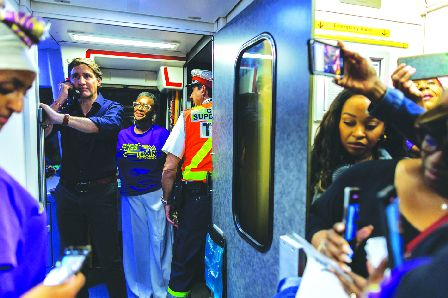

杜鲁多政府将推出每年30亿元的公共交通基金，以支持各市政府更新车辆，并改善交通基础设施。（资料图片）
杜鲁多政府将推出每年30亿元的公共交通基金，以支持各市政府更新车辆，改善交通基础设施。有批评者认为，如没有其他资金来支持公交运营，30亿元对于实现城市公交扭亏为盈影响很少。
多伦多大学土木工程教授萨克斯（Shoshanna Saxe ）表示，多伦多公交系统的衰落并非偶然。过去数十年来，以汽车为导向的城市建设和投资不足，到新冠疫情期间达到顶峰。不止多伦多，全国各地的公交客流量大幅下降，以致公交系统难以维持运营。如今市政交通系统正努力从疫情中恢复过来，并适应人们通勤习惯的变化。
随著人口增长，以及各地政府试图建造更多住房以跟上人口增长的步伐，发展公共交通成为市政府的优先事项。这就是为何杜鲁多政府会推出每年30亿元的公交基金。
该基金将于2026年推出，各市政府可申请，基金将在10年内涵盖新的交通项目、基础设施改善和其他交通系统的升级，也将捆绑提高住房密度和降低公交车站附近的停车数量要求。
虽然这笔基金将帮助资金短缺的城市来支付必要的交通系统升级，但联邦政府已明确表示，不会支持交通运营，如雇用司机和增加服务时间等方面的开支，由此引起人们质疑基金能产生多大的影响。
环保组织「环境保护」（Environmental Defence）清洁交通项目经理华莱士 (Nate Wallace) 表示，该基金的设计有缺陷，如不鼓励增加公交服务的时间来提高运营效率，只是改善基础设施，将对增加客流量起不了多大作用，「我担心更新的公交车辆最终会被锁在车库里，而不是接载乘客」。
从全国看，许多大城市的公交运营属于亏损状态。温哥华TransLink公交系统本周便警告，由于有6亿元的预算短缺，如不能获得额外资金，可能要削减一半的巴士服务。多伦多的公交系统客流量已恢复到疫情前80%水平，但预测2025和2026年间依然会亏损运营。
「环境保护」一份研究报告称，联邦政府如每年再投入30亿元基金，到2035年有望将公交乘客量增加一倍，并减少6,500万吨的碳排放。萨克斯说，虽然联邦政府明确表示，不投资支持各市的公交运营，但设立这笔基金应该受到赞扬，特别是它捆绑要求市府取消公交系统附近的强制性最低停车位数量，并增加那里以及学院大学附近的住房密度，才有资格获得基金。
Alex Wu, Local Journalism Initiative Reporter